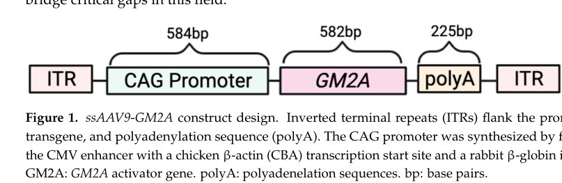

Tay-Sachs disease AB variant (GM2 gangliosidosis AB variant, GM2 activator deficiency) is an ultra-rare autosomal recessive neuronopathic lysosomal storage disease caused by biallelic loss-of-function variants in GM2A encoding the GM2 ganglioside activator protein. Although beta-hexosaminidase A and B enzyme activities are normal, the missing activator cofactor prevents hexosaminidase A from degrading GM2 ganglioside, which accumulates in neurons and produces a severe Tay-Sachs-like neurodegenerative phenotype, including developmental regression and a macular cherry-red spot. Diagnosis requires GM2A sequencing because routine enzyme assays are normal.
Ask a research question about Tay-Sachs Disease AB Variant. OpenScientist will conduct autonomous deep research using the Disorder Mechanisms Knowledge Base and PubMed literature (typically 10-30 minutes).
Do not include personal health information in your question. Questions and results are cached in your browser's local storage.
Conditions with similar clinical presentations that must be differentiated from Tay-Sachs Disease AB Variant:
name: Tay-Sachs Disease AB Variant
creation_date: "2026-06-13T00:00:00Z"
description: >-
Tay-Sachs disease AB variant (GM2 gangliosidosis AB variant, GM2 activator deficiency)
is an ultra-rare autosomal recessive neuronopathic lysosomal storage disease caused by
biallelic loss-of-function variants in GM2A encoding the GM2 ganglioside activator
protein. Although beta-hexosaminidase A and B enzyme activities are normal, the missing
activator cofactor prevents hexosaminidase A from degrading GM2 ganglioside, which
accumulates in neurons and produces a severe Tay-Sachs-like neurodegenerative phenotype,
including developmental regression and a macular cherry-red spot. Diagnosis requires GM2A
sequencing because routine enzyme assays are normal.
category: Mendelian
disease_term:
preferred_term: Tay-Sachs disease AB variant
term:
id: MONDO:0010099
label: Tay-Sachs disease AB variant
mappings:
mondo_mappings:
- term:
id: MONDO:0010099
label: Tay-Sachs disease AB variant
mapping_predicate: skos:exactMatch
mapping_source: MONDO
mapping_justification: Primary MONDO disease identifier for this GM2 activator deficiency entry.
synonyms:
- GM2 gangliosidosis AB variant
- GM2 activator deficiency
- GM2 activator protein deficiency
parents:
- GM2 Gangliosidosis
- Lysosomal Storage Disorder
- Neurodegenerative Disease
pathophysiology:
- name: GM2 Activator Protein Deficiency
conforms_to: "lysosomal_substrate_accumulation#Lysosomal Hydrolase or Cofactor Deficiency"
description: >-
Biallelic GM2A variants eliminate the GM2 activator protein (GM2AP), a non-enzymatic
lysosomal cofactor essential for hexosaminidase A to access and hydrolyze GM2
ganglioside. The defect is mechanistically distinct from Tay-Sachs (HEXA) and Sandhoff
(HEXB) disease, and enzyme activities are normal.
gene:
preferred_term: GM2A
term:
id: hgnc:4367
label: GM2A
cell_types:
- preferred_term: neuron
term:
id: CL:0000540
label: neuron
evidence:
- reference: PMID:35925454
reference_title: "GM2 gangliosidosis AB variant: first case of late onset and review of the literature."
supports: SUPPORT
evidence_source: HUMAN_CLINICAL
snippet: "two mutations in the GM2A gene encoding the GM2 activator protein (GM2-AP), an essential co-factor of hexosaminidase A"
explanation: "GM2A encodes the GM2 activator protein, an essential cofactor of hexosaminidase A."
downstream:
- target: Neuronal GM2 Ganglioside Accumulation and Neurodegeneration
description: Without the activator cofactor, GM2 ganglioside cannot be degraded and accumulates.
- name: Neuronal GM2 Ganglioside Accumulation and Neurodegeneration
conforms_to: "lysosomal_substrate_accumulation#Lysosomal Substrate Accumulation"
description: >-
GM2 ganglioside accumulates in neuronal lysosomes because hexosaminidase A cannot
degrade it without the activator, driving progressive neurodegeneration.
cell_types:
- preferred_term: neuron
term:
id: CL:0000540
label: neuron
cellular_components:
- preferred_term: lysosome
term:
id: GO:0005764
label: lysosome
biological_processes:
- preferred_term: ganglioside catabolic process
modifier: DECREASED
term:
id: GO:0006689
label: ganglioside catabolic process
evidence:
- reference: PMID:35925454
reference_title: "GM2 gangliosidosis AB variant: first case of late onset and review of the literature."
supports: SUPPORT
evidence_source: HUMAN_CLINICAL
snippet: "neurodegenerative diseases caused by lysosomal accumulation of GM2 gangliosides"
explanation: "Lysosomal GM2 ganglioside accumulation causes the neurodegenerative phenotype."
downstream:
- target: Neurodegeneration
description: Neuronal GM2 lysosomal storage is the proximal lesion driving progressive neurodegeneration.
causal_link_type: DIRECT
- target: Developmental regression
description: Progressive neuronal storage and neurodegeneration cause loss of acquired developmental milestones.
causal_link_type: INDIRECT_KNOWN_INTERMEDIATES
intermediate_mechanisms:
- neuronal lysosomal GM2 storage
- progressive neurodegeneration
- target: Cherry red spot of the macula
description: GM2 storage in retinal neurons produces the characteristic macular cherry-red spot.
causal_link_type: INDIRECT_KNOWN_INTERMEDIATES
intermediate_mechanisms:
- retinal neuronal lipid storage
- target: Nystagmus
description: Neuronal storage disease can involve ocular motor pathways, producing nystagmus.
causal_link_type: INDIRECT_UNKNOWN_INTERMEDIATES
- target: Hypotonia
description: Infantile neuronal storage and neurodegeneration produce reduced tone.
causal_link_type: INDIRECT_KNOWN_INTERMEDIATES
intermediate_mechanisms:
- progressive neurodegeneration
- target: Hyperacusis
description: Neurodegenerative GM2 storage disease produces exaggerated sound sensitivity in affected infants.
causal_link_type: INDIRECT_UNKNOWN_INTERMEDIATES
phenotypes:
- name: Developmental regression
description: Loss of acquired developmental milestones, as in classic Tay-Sachs disease.
phenotype_term:
preferred_term: Developmental regression
term:
id: HP:0002376
label: Developmental regression
evidence:
- reference: PMID:28540636
reference_title: "GM2 Activator Deficiency Caused by a Homozygous Exon 2 Deletion in GM2A."
supports: SUPPORT
evidence_source: HUMAN_CLINICAL
snippet: "The combination of a cherry red spot and developmental regression"
explanation: "Developmental regression is a core feature of GM2 activator deficiency."
- name: Cherry red spot of the macula
description: A macular cherry-red spot, as in other GM2 gangliosidoses.
phenotype_term:
preferred_term: Cherry red spot of the macula
term:
id: HP:0010729
label: Cherry red spot of the macula
evidence:
- reference: PMID:28540636
reference_title: "GM2 Activator Deficiency Caused by a Homozygous Exon 2 Deletion in GM2A."
supports: SUPPORT
evidence_source: HUMAN_CLINICAL
snippet: "The combination of a cherry red spot and developmental regression"
explanation: "A macular cherry-red spot is characteristic."
- name: Neurodegeneration
description: Progressive neurodegeneration from neuronal GM2 ganglioside storage.
phenotype_term:
preferred_term: Neurodegeneration
term:
id: HP:0002180
label: Neurodegeneration
evidence:
- reference: PMID:35925454
reference_title: "GM2 gangliosidosis AB variant: first case of late onset and review of the literature."
supports: SUPPORT
evidence_source: HUMAN_CLINICAL
snippet: "neurodegenerative diseases caused by lysosomal accumulation of GM2 gangliosides"
explanation: "The AB variant is a GM2-storage neurodegenerative disease."
- name: Nystagmus
description: Nystagmus may be detected on ophthalmologic examination.
phenotype_term:
preferred_term: Nystagmus
term:
id: HP:0000639
label: Nystagmus
evidence:
- reference: PMID:27402091
reference_title: "GM2 gangliosidosis AB variant: novel mutation from India - a case report with a review."
supports: SUPPORT
evidence_source: HUMAN_CLINICAL
snippet: "nystagmus and cherry red spot was detected during ophthalmic examination"
explanation: "Nystagmus was documented on ophthalmic examination in GM2 activator deficiency."
- name: Hypotonia
description: Hypotonia in the infantile presentation.
phenotype_term:
preferred_term: Hypotonia
term:
id: HP:0001252
label: Hypotonia
evidence:
- reference: PMID:27402091
supports: SUPPORT
evidence_source: HUMAN_CLINICAL
snippet: "global\ndevelopmental delay, hypotonia and sensitive to hyperacusis"
explanation: Hypotonia is part of the infantile GM2 activator deficiency phenotype.
- name: Hyperacusis
description: Increased sensitivity to sound (hyperacusis / exaggerated startle).
phenotype_term:
preferred_term: Hyperacusis
term:
id: HP:0010780
label: Hyperacusis
evidence:
- reference: PMID:27402091
supports: SUPPORT
evidence_source: HUMAN_CLINICAL
snippet: "hypotonia and sensitive to hyperacusis"
explanation: Hyperacusis (sound sensitivity) is documented in GM2 activator deficiency.
inheritance:
- name: Autosomal recessive
inheritance_term:
preferred_term: Autosomal recessive inheritance
term:
id: HP:0000007
label: Autosomal recessive inheritance
evidence:
- reference: PMID:27402091
reference_title: "GM2 gangliosidosis AB variant: novel mutation from India - a case report with a review."
supports: SUPPORT
evidence_source: HUMAN_CLINICAL
snippet: "GM2 gangliosidosis-AB variants a rare autosomal recessive neurodegenerative disorder occurring due to deficiency of GM2 activator protein"
explanation: "The AB variant is autosomal recessive."
genetic:
- name: GM2A
association: Biallelic loss-of-function GM2A variants causing GM2 activator protein deficiency
relationship_type: CAUSATIVE
variant_origin: GERMLINE
gene_term:
preferred_term: GM2A
term:
id: hgnc:4367
label: GM2A
evidence:
- reference: PMID:35925454
reference_title: "GM2 gangliosidosis AB variant: first case of late onset and review of the literature."
supports: SUPPORT
evidence_source: HUMAN_CLINICAL
snippet: "two mutations in the GM2A gene encoding the GM2 activator protein (GM2-AP), an essential co-factor of hexosaminidase A"
explanation: "Biallelic GM2A variants cause GM2 activator protein deficiency."
diagnosis:
- name: Hexosaminidase enzyme assay with GM2A sequencing
diagnosis_term:
preferred_term: clinical laboratory procedure
term:
id: MAXO:0000006
label: clinical laboratory procedure
description: >-
A GM2 gangliosidosis phenotype with normal hexosaminidase A and B activity is the key
clue; diagnosis is confirmed by GM2A sequencing (with copy-number analysis, as exon
deletions can be missed).
markers: Normal beta-hexosaminidase A and B activity with a GM2 gangliosidosis phenotype.
evidence:
- reference: PMID:27402091
reference_title: "GM2 gangliosidosis AB variant: novel mutation from India - a case report with a review."
supports: SUPPORT
evidence_source: HUMAN_CLINICAL
snippet: "normal enzyme activity of β-hexosaminidase-A and -B in leucocytes need to be investigated for GM2 activator protein"
explanation: "Normal hexosaminidase activity with a GM2 phenotype prompts GM2 activator (GM2A) testing."
- name: GM2A molecular genetic testing
diagnosis_term:
preferred_term: genetic testing
term:
id: MAXO:0000127
label: genetic testing
description: Confirmatory biallelic GM2A sequencing with copy-number analysis.
evidence:
- reference: PMID:35925454
reference_title: "GM2 gangliosidosis AB variant: first case of late onset and review of the literature."
supports: SUPPORT
evidence_source: HUMAN_CLINICAL
snippet: "A genetic analysis revealed two mutations in the GM2A gene"
explanation: "GM2A sequencing provides molecular confirmation."
differential_diagnoses:
- name: Tay-Sachs disease
description: >-
Classic GM2 gangliosidosis caused by HEXA mutations with deficient hexosaminidase A
activity.
disease_term:
preferred_term: Tay-Sachs disease
term:
id: MONDO:0010100
label: Tay-Sachs disease
distinguishing_features:
- Caused by HEXA mutations with deficient hexosaminidase A enzyme activity, unlike the normal enzyme activity of the AB variant.
evidence:
- reference: PMID:27402091
reference_title: "GM2 gangliosidosis AB variant: novel mutation from India - a case report with a review."
supports: SUPPORT
evidence_source: HUMAN_CLINICAL
snippet: "normal enzyme activity of β-hexosaminidase-A and -B in leucocytes need to be investigated for GM2 activator protein"
explanation: "Normal enzyme activity distinguishes the AB variant from enzyme-deficient Tay-Sachs."
- name: Sandhoff disease
description: >-
GM2 gangliosidosis caused by HEXB mutations with combined hexosaminidase A and B
deficiency.
disease_term:
preferred_term: Sandhoff disease
term:
id: MONDO:0010006
label: Sandhoff disease
distinguishing_features:
- Caused by HEXB mutations with combined hexosaminidase A and B deficiency, unlike the normal enzyme activity of the AB variant.
evidence:
- reference: PMID:27402091
reference_title: "GM2 gangliosidosis AB variant: novel mutation from India - a case report with a review."
supports: SUPPORT
evidence_source: HUMAN_CLINICAL
snippet: "(Tay-Sachs or Sandhoff disease) and normal enzyme activity of β-hexosaminidase-A and -B in leucocytes need to be investigated for GM2 activator protein"
explanation: "A GM2 phenotype with normal hexosaminidase activity distinguishes the AB variant from enzyme-deficient Tay-Sachs and Sandhoff disease."
treatments:
- name: Supportive Care
description: >-
No disease-modifying therapy is approved for GM2 activator deficiency; management is
supportive and symptomatic (seizure control, nutritional and respiratory support,
palliative care).
treatment_term:
preferred_term: supportive care
term:
id: MAXO:0000950
label: supportive care
definitions:
- name: Clinical case definition of Tay-Sachs disease AB variant
definition_type: CASE_DEFINITION
description: >-
Tay-Sachs disease AB variant is a GM2 gangliosidosis caused by biallelic GM2A variants
abolishing the GM2 activator protein, producing neuronal GM2 ganglioside accumulation
and a Tay-Sachs-like neurodegenerative phenotype despite normal hexosaminidase A and B
enzyme activity.
scope: Disease-level case definition for GM2 activator deficiency.
evidence:
- reference: PMID:27402091
reference_title: "GM2 gangliosidosis AB variant: novel mutation from India - a case report with a review."
supports: SUPPORT
evidence_source: HUMAN_CLINICAL
snippet: "GM2 gangliosidosis-AB variants a rare autosomal recessive neurodegenerative disorder occurring due to deficiency of GM2 activator protein"
explanation: "Anchors the case definition in GM2 activator protein deficiency."
Tay–Sachs disease AB variant (also called GM2 gangliosidosis AB variant) is an ultra-rare, autosomal-recessive lysosomal storage disorder caused by biallelic pathogenic variants in GM2A, which encodes the GM2 activator protein (GM2AP). GM2AP is required for β-hexosaminidase A (HexA) to hydrolyze GM2 ganglioside; thus, AB-variant patients can have a Tay–Sachs-like phenotype despite normal HexA/HexB enzyme activities on routine assays. Recent (2023) preclinical work demonstrates proof-of-concept AAV9-GM2A gene replacement and establishes a more severe, translationally relevant Gm2a−/−Neu3−/− mouse model by removing a mouse-specific compensatory GM2 catabolic pathway. (ganne2022gm2gangliosidosisab pages 1-5, sheth2016gm2gangliosidosisab pages 1-3, hall2017gm2activatordeficiency pages 1-3, deschenes2023characterizationofa pages 8-10, vyas2023efficacyofadenoassociated pages 1-2)
| Knowledge-base field | Summary |
|---|---|
| Disease definition / synonyms / identifiers | Ultra-rare autosomal-recessive GM2 gangliosidosis caused by deficiency of the GM2 activator protein (GM2AP), clinically often indistinguishable from Tay-Sachs disease. Common names: Tay-Sachs disease AB variant, GM2 gangliosidosis AB variant, GM2 activator deficiency, GM2 activator protein deficiency. OMIM disease entry reported as 272750; GM2A gene OMIM *613109; MONDO Tay-Sachs disease AB variant = MONDO_0010099; broader GM2 gangliosidosis = MONDO_0017720. Fewer than 30 cases were reported in the literature by 2022; older reviews counted 9-10 molecularly confirmed cases worldwide (sheth2016gm2gangliosidosisab pages 1-3, ganne2022gm2gangliosidosisab pages 1-5, hall2017gm2activatordeficiency pages 1-3, OpenTargets Search: GM2 gangliosidosis,Tay-Sachs disease-GM2A,HEXA,HEXB). |
| Causal gene and inheritance | Caused by biallelic GM2A variants (gene encodes ganglioside GM2 activator, a non-enzymatic lysosomal cofactor required to present GM2 to Hex A for hydrolysis). Inheritance is autosomal recessive. Mechanistically distinct from classic Tay-Sachs (HEXA) and Sandhoff (HEXB) despite overlapping phenotype (ganne2022gm2gangliosidosisab pages 1-5, sheth2016gm2gangliosidosisab pages 3-4, sheth2016gm2gangliosidosisab pages 1-3, gualdronfrias2019taysachsdisease pages 3-4). |
| Hallmark diagnostic pattern | Key clue: GM2 gangliosidosis phenotype with normal Hex A and Hex B enzyme activity in leukocytes/blood. Recommended workup includes GM2A sequencing, with copy-number analysis because exon-level deletions can be missed by routine sequencing; supportive/confirmatory tools include plasma GM2 LC-MS/MS, fibroblast GM2 studies, EM/IF, and RNA/cDNA analyses in unresolved cases (hall2017gm2activatordeficiency pages 1-3, ganne2022gm2gangliosidosisab pages 5-8, ganne2022gm2gangliosidosisab pages 8-14, sheth2016gm2gangliosidosisab pages 3-4). |
| Main phenotypes by onset: infantile | Usually onset in the first year (often ~3-12 months). Features include developmental delay/regression, hypotonia, hyperacusis/exaggerated startle, seizures, poor visual attention/nystagmus, bilateral cherry-red maculae, and progressive neurodegeneration. MRI may show putaminal hyperintensity, thalamic hypointensity, delayed/unmyelinated white matter. Reported outcome: severe disability and early death around 4-5 years, sometimes earlier from respiratory complications (ganne2022gm2gangliosidosisab pages 1-5, sheth2016gm2gangliosidosisab pages 3-4, sheth2016gm2gangliosidosisab pages 1-3, deschenes2023characterizationofa pages 1-2, noites2025gm2gangliosidosisab pages 2-3). |
| Main phenotypes by onset: juvenile | Reported onset roughly 2-10 years with ataxia, psychomotor deterioration/regression, spasticity, seizures and progressive neurologic decline; historically death before adulthood in described juvenile GM2 gangliosidosis summaries. AB-variant-specific juvenile cases are rare and sparsely characterized (ganne2022gm2gangliosidosisab pages 1-5). |
| Main phenotypes by onset: late / adult | First late-onset AB-variant case reported in 2022. Phenotype may include gait disorder beginning around age 10, lower motor neuron involvement, spinocerebellar ataxia, muscular atrophy, mild cognitive/executive deficits, psychiatric features, and subtle cerebellar vermis atrophy with normal Hex A/B activity. Prognosis appears better than infantile disease but data are very limited (ganne2022gm2gangliosidosisab pages 5-8, ganne2022gm2gangliosidosisab pages 1-5). |
| Representative pathogenic variants reported | Reported variants include c.472G>T (p.Glu158Ter / p.E158X), homozygous exon 2 deletion, c.79A>T (p.Lys27Ter), c.415C>T (p.Pro139Ser; evaluated as likely hypomorphic / VUS in trans with truncating allele), and earlier literature variants such as c.160G>T (p.Glu54Ter), c.164C>T (p.Pro55Leu), c.412T>C, c.506G>C (p.Arg169Pro), c.522T>G (p.Leu174Arg) plus frameshift/deletion alleles. Population data are sparse; some variants were absent from gnomAD/ExAC/TOPMed and one missense allele had a single prior Latin American report (sheth2016gm2gangliosidosisab pages 3-4, hall2017gm2activatordeficiency pages 1-3, ganne2022gm2gangliosidosisab pages 5-8, sheth2016gm2gangliosidosisab pages 1-3, ganne2022gm2gangliosidosisab pages 14-17). |
| Epidemiology / population notes | Rarest GM2 gangliosidosis subtype. Literature-based counts: 9 cases / 7 mutations in older review, 10 molecularly proven cases by 2016 review table, and <30 cases by 2022 review. Reported ancestries/populations include Indian, Saudi, Spanish, US Black, Laotian/Hmong, and later Portuguese; consanguinity is reported in some infantile cases but no robust carrier-frequency estimate exists for AB variant (sheth2016gm2gangliosidosisab pages 1-3, ganne2022gm2gangliosidosisab pages 1-5, gowda2022clinicalandlaboratory pages 1-2, noites2025gm2gangliosidosisab pages 1-2). |
| 2023-2024 translational development: AAV9-GM2A preclinical | 2023 AB-variant-specific gene therapy proof-of-concept: systemic ssAAV9-GM2A in Gm2a-/- mice at 1 × 10^14 vg/kg (reported also as 1 × 10^11 vg/mouse) given at postnatal day 1 or 6 weeks produced long-term vector persistence in brain/liver, reduced CNS GM2 accumulation, and improved rotarod performance especially in 6-week-treated animals; long-term biochemical correction was partial, suggesting need for higher dose/optimization. Separate 2023 intrathecal scAAV9.hGM2A study showed dose-responsive biochemical correction with 0.5, 1.0, 2.0 × 10^11 vg/mouse, broad CNS distribution, persistence up to 104 weeks, and no severe adverse events (deschenes2023biochemicalcorrectionof pages 1-2, deschenes2023biochemicalcorrectionof pages 2-4, vyas2023efficacyofadenoassociated pages 7-9, deschenes2023biochemicalcorrectionof pages 14-15, vyas2023efficacyofadenoassociated pages 11-13, vyas2023efficacyofadenoassociated pages 1-2, vyas2023efficacyofadenoassociated pages 2-4, vyas2023efficacyofadenoassociated pages 9-10, vyas2023efficacyofadenoassociated media 2eb6c65b). |
| 2023-2024 translational development: severe double-KO model | 2023 Gm2a-/-Neu3-/- double knockout mouse established as a more severe and translationally relevant AB-variant model. Rationale: single Gm2a-/- mice are mild because murine NEU3 provides an alternative GM2 catabolic route. Double KO causes marked CNS GM2 accumulation (~3-4-fold vs Gm2a-/-), ataxia, reduced mobility/coordination, weight loss, vacuolization, onset of deficits by ~12-16 weeks, and shortened lifespan (~27 weeks vs ~92 weeks for Gm2a-/-), better approximating severe human disease for preclinical testing (deschenes2023characterizationofa pages 8-10, vyas2023efficacyofadenoassociated pages 9-10, deschenes2023characterizationofa pages 1-2, deschenes2023characterizationofa pages 2-3, deschenes2023characterizationofa pages 3-4). |
| Relevant clinical trials for GM2 gangliosidoses: TSHA-101 | NCT04798235; TSHA-101 bicistronic AAV9-HEXA/HEXB gene therapy; intrathecal, one-time; target infantile-onset GM2 gangliosidosis; ACTIVE_NOT_RECRUITING; start date 2021-03-12; phase 1/2; planned enrollment 3. Primary focus: safety/tolerability; secondary outcomes include survival, Hex A activity, motor/neurologic measures (NCT04798235 chunk 1). |
| Relevant clinical trials for GM2 gangliosidoses: AXO-AAV-GM2 interventional | NCT04669535; AXO-AAV-GM2 dual-vector gene therapy for Tay-Sachs/Sandhoff; delivery described as bilateral intraparenchymal thalamic plus intracisternal/intrathecal; pediatric target population; TERMINATED in trial search output; start year 2021; phase 1; enrollment reported as 9 in trial search output (review chapter listed 18 planned). No posted efficacy results in the retrieved context (NCT04669535 chunk 2). |
| Relevant clinical trials for GM2 gangliosidoses: AXO-AAV-GM2 long-term follow-up | NCT06614569; long-term follow-up of previously treated AXO-AAV-GM2 subjects; parent intervention route bilateral intraparenchymal thalamic and intracisternal/intrathecal; ACTIVE_NOT_RECRUITING; actual start 2024-09-17; estimated enrollment 7; main purpose is delayed safety plus longitudinal neurocognitive/motor follow-up for up to 5 years (NCT06614569 chunk 1). |
| Relevant clinical trials for GM2 gangliosidoses: natural history | NCT00668187; A Natural History Study of the Gangliosidoses; observational, no intervention; includes Tay-Sachs/Sandhoff/GM1; RECRUITING; start 2010-12; estimated enrollment 52. Important for defining progression and outcome measures for future AB-variant and broader GM2 trials (NCT00668187 chunk 1). |
Table: This table compiles the core knowledge-base fields for Tay-Sachs disease AB variant (GM2A deficiency), including disease definition, genetics, phenotype, diagnostics, and 2023-2024 translational advances. It also summarizes relevant GM2 gangliosidosis clinical trials to support curation and therapeutic landscape review.
GM2 gangliosidosis AB variant is a GM2 gangliosidosis caused by deficiency of the non-enzymatic cofactor GM2 activator protein. Clinically, it is often described as indistinguishable from Tay–Sachs disease, because GM2 accumulates in neurons in both conditions, leading to progressive neurodegeneration. (ganne2022gm2gangliosidosisab pages 1-5, sheth2016gm2gangliosidosisab pages 1-3)
Current understanding: AB variant is best conceptualized as a third genetic cause of the Tay–Sachs/Sandhoff clinical spectrum: HEXA (Tay–Sachs), HEXB (Sandhoff), and GM2A (AB variant). (ganne2022gm2gangliosidosisab pages 1-5, sheth2016gm2gangliosidosisab pages 1-3)
Not found in retrieved sources for AB variant: Orphanet ID, ICD-10/ICD-11 codes, and MeSH unique ID were not explicitly provided in the retrieved full-text evidence. (sheth2016gm2gangliosidosisab pages 1-3, ganne2022gm2gangliosidosisab pages 1-5)
Most AB-variant knowledge is derived from individual case reports and small case series/reviews (reflecting extreme rarity), plus animal-model and in vitro studies for mechanistic and therapeutic development. (sheth2016gm2gangliosidosisab pages 1-3, ganne2022gm2gangliosidosisab pages 1-5, deschenes2023characterizationofa pages 8-10, vyas2023efficacyofadenoassociated pages 7-9)
Primary cause: biallelic loss-of-function (or severely hypomorphic) variants in GM2A leading to GM2AP deficiency and failure of GM2 hydrolysis in lysosomes. (sheth2016gm2gangliosidosisab pages 1-3, sheth2016gm2gangliosidosisab pages 3-4, hall2017gm2activatordeficiency pages 1-3)
No environmental or lifestyle risk factors were identified in the retrieved evidence; AB variant is a monogenic lysosomal disorder. (sheth2016gm2gangliosidosisab pages 1-3)
No protective genetic/environmental factors were identified in the retrieved evidence. In mice, an alternate GM2 catabolic pathway mediated by NEU3 partially compensates for GM2A deficiency (a species-specific modifier), but this is not established as a human protective factor. (deschenes2023characterizationofa pages 1-2, vyas2023efficacyofadenoassociated pages 9-10)
Not reported in the retrieved evidence. (sheth2016gm2gangliosidosisab pages 1-3)
AB variant is frequently described as phenotypically similar to Tay–Sachs disease, with severe neurodegeneration in infantile forms and more heterogeneous manifestations in later-onset disease. (ganne2022gm2gangliosidosisab pages 1-5, sheth2016gm2gangliosidosisab pages 1-3)
Commonly reported phenotypes include: * Global developmental delay/regression (HPO suggestion: HP:0001263 Global developmental delay; HP:0002376 Developmental regression) (sheth2016gm2gangliosidosisab pages 1-3) * Hypotonia (HP:0001252) (sheth2016gm2gangliosidosisab pages 1-3) * Hyperacusis / exaggerated startle (HP:0000347 Hyperacusis; HP:0002343 Startle response) (sheth2016gm2gangliosidosisab pages 1-3, noites2025gm2gangliosidosisab pages 2-3) * Seizures (HP:0001250) (ganne2022gm2gangliosidosisab pages 1-5, noites2025gm2gangliosidosisab pages 2-3) * Nystagmus / visual impairment (HP:0000639 Nystagmus; HP:0000505 Visual impairment) (sheth2016gm2gangliosidosisab pages 1-3) * Cherry-red spot of the macula (HP:0001103) (sheth2016gm2gangliosidosisab pages 1-3)
Neuroimaging features (infantile): basal ganglia and thalamic signal abnormalities and delayed myelination have been reported (e.g., putaminal hyperintensity, thalamic hypointensity, unmyelinated white matter). (sheth2016gm2gangliosidosisab pages 1-3)
Temporal course: infantile AB variant typically presents in the first year and progresses to severe disability and early death (premature death around 4–5 years is cited in review summaries; individual infantile cases may die earlier due to complications). (ganne2022gm2gangliosidosisab pages 1-5, noites2025gm2gangliosidosisab pages 2-3)
Summary descriptions (limited AB-variant-specific case detail in retrieved evidence): * Onset: ~2–10 years (ganne2022gm2gangliosidosisab pages 1-5) * Phenotypes: ataxia, psychomotor deterioration, spasticity, seizures (HPO suggestions: HP:0001251 Ataxia; HP:0001257 Spasticity) (ganne2022gm2gangliosidosisab pages 1-5) * Outcome: progression and death before adulthood is described in GM2 gangliosidosis subtype summaries (AB-variant-specific longitudinal datasets remain sparse). (ganne2022gm2gangliosidosisab pages 1-5)
A 2022 report described a first late-onset AB-variant case with: * Gait disorder beginning ~age 10 and progressive course (ganne2022gm2gangliosidosisab pages 5-8) * Lower motor neuronopathy and spinocerebellar ataxia (HPO: HP:0001272 Cerebellar ataxia; HP:0000739 Abnormality of the corticospinal tract can be considered depending on exam; lower motor neuron involvement is captured by HP:0003433 Lower motor neuron dysfunction) (ganne2022gm2gangliosidosisab pages 5-8, ganne2022gm2gangliosidosisab pages 1-5) * Mild cognitive/executive deficits (HP:0001263 / HP:0002143 Abnormal executive function) (ganne2022gm2gangliosidosisab pages 5-8) * Subtle cerebellar vermis atrophy on MRI (UBERON: cerebellar vermis) (ganne2022gm2gangliosidosisab pages 5-8)
Formal QoL instruments were not reported in the retrieved evidence. Functional impairment is implied by progressive neurologic decline and loss of mobility/vision in infantile forms, and by progressive ataxia/LMN dysfunction in later-onset disease. (ganne2022gm2gangliosidosisab pages 1-5, ganne2022gm2gangliosidosisab pages 5-8)
Role: GM2AP is described as a non-enzymatic lipid-binding cofactor that enables HexA to interact with GM2 ganglioside; a review states GM2-AP “forms a complex with GM2 ganglioside allowing interaction between hexosaminidase A and GM2 ganglioside.” (ganne2022gm2gangliosidosisab pages 1-5)
Reported AB-variant disease alleles include: * Nonsense: GM2A c.472G>T (p.E158X) (infantile case report; predicted truncation and loss of function) (sheth2016gm2gangliosidosisab pages 3-4) * Structural/copy-number variant: homozygous exon 2 deletion in GM2A (requires CNV analysis; first whole-exon deletion reported) (hall2017gm2activatordeficiency pages 1-3) * Compound heterozygosity: c.79A>T (p.Lys27*) with c.415C>T (p.Pro139Ser) in a late-onset case; the missense allele was discussed as potentially hypomorphic and extremely rare in population databases. (ganne2022gm2gangliosidosisab pages 5-8, ganne2022gm2gangliosidosisab pages 14-17)
Population frequency notes: for the late-onset case, the p.Pro139Ser allele was reported with no homozygotes in gnomAD/ExAC/TOPMed and only one prior report in a Latin American individual. (ganne2022gm2gangliosidosisab pages 14-17)
NEU3 (neuraminidase 3) acts as a compensatory enzyme in mice, providing an alternative GM2 breakdown route (GM2 → GA2) and attenuating the phenotype of Gm2a−/− mice. This is a key translational consideration and a model-based modifier mechanism. (deschenes2023characterizationofa pages 1-2, vyas2023efficacyofadenoassociated pages 9-10)
Not reported in retrieved evidence for AB variant. (sheth2016gm2gangliosidosisab pages 1-3)
No non-genetic environmental, lifestyle, or infectious contributors were identified in the retrieved evidence; AB variant is a monogenic lysosomal storage disorder. (sheth2016gm2gangliosidosisab pages 1-3)
Suggested GO Biological Process terms (mechanism-level): * GO:0006687 glycosphingolipid metabolic process * GO:0046467 membrane lipid metabolic process * GO:0006508 proteolysis (relevant for degradation of misfolded/truncated proteins described in some AB-variant mutation mechanisms)
A major translational insight is that mice have stronger NEU3-mediated alternative GM2 catabolism, which masks severity in Gm2a−/− mice. A 2023 study generated Gm2a−/−Neu3−/− mice and showed (relative to Gm2a−/− alone) markedly increased CNS GM2 accumulation, neurodegenerative pathology, and shortened lifespan, supporting the causal role of GM2 storage and providing a more severe preclinical model. (deschenes2023characterizationofa pages 8-10, deschenes2023characterizationofa pages 1-2)
Autosomal recessive (biallelic GM2A). (ganne2022gm2gangliosidosisab pages 1-5, sheth2016gm2gangliosidosisab pages 3-4)
Robust population prevalence/incidence estimates for AB variant are not available in the retrieved evidence. Instead, rarity is described by case counts, e.g.: * “Only seven mutations in nine cases have been reported…” in a 2016 review/case report, with their report adding a tenth molecularly confirmed case. (sheth2016gm2gangliosidosisab pages 3-4) * A 2022 review states AB variant is the rarest GM2 subtype with “less than thirty cases described in the literature.” (ganne2022gm2gangliosidosisab pages 1-5) * A 2022 Indian clinical series identified 1 AB-variant case among 32 gangliosidosis patients in that center-based cohort (not population incidence). (gowda2022clinicalandlaboratory pages 1-2)
No clear AB-variant founder mutation pattern was established in the retrieved evidence; reported cases span diverse ancestries (e.g., Indian, Saudi, Spanish, US Black, Laotian/Hmong). (sheth2016gm2gangliosidosisab pages 1-3)
Key diagnostic clue: Tay–Sachs-like phenotype with normal leukocyte HexA and total hexosaminidase activity should prompt evaluation for GM2AP deficiency / GM2A variants. (sheth2016gm2gangliosidosisab pages 3-4)
Case-report example enzyme pattern (infantile AB variant): normal Hex-A and total-Hex activities were documented despite a classic clinical presentation. (sheth2016gm2gangliosidosisab pages 3-4)
Recommended approach (from case-based evidence): 1. If GM2 gangliosidosis is clinically suspected, start with HexA/HexB enzymology. 2. If HexA/HexB results are non-diagnostic/normal but phenotype is strong, perform GM2A sequencing. 3. If sequencing is negative but suspicion remains, perform exon-level copy number analysis because exon deletions can be missed by routine sequencing (e.g., exon 2 deletion). (hall2017gm2activatordeficiency pages 1-3)
Advanced confirmatory methods (used in a late-onset case): plasma GM2 quantification by LC–MS/MS with reported sensitivity/specificity 100% at specific cutoffs; fibroblast studies by EM/IF; and GM2A expression studies (RT-qPCR/cDNA sequencing) to help classify variants. (ganne2022gm2gangliosidosisab pages 5-8, ganne2022gm2gangliosidosisab pages 8-14)
The retrieved evidence supports that molecular diagnosis (gene-based) is essential for AB-variant detection and family counseling because enzyme testing may not be informative for GM2A deficiency. (hall2017gm2activatordeficiency pages 1-3, sheth2016gm2gangliosidosisab pages 3-4)
No disease-modifying standard therapy was identified in the retrieved AB-variant evidence; care is generally supportive and multidisciplinary given progressive neurodegeneration. (ganne2022gm2gangliosidosisab pages 1-5)
Suggested MAXO terms (supportive care examples): * MAXO:0000756 palliative care * MAXO:0000917 physical therapy * MAXO:0000918 occupational therapy * MAXO:0000919 speech therapy * MAXO:0001020 seizure management (antiseizure pharmacotherapy)
Two 2023 studies provide AB-variant-specific proof-of-concept GM2A gene replacement:
Systemic IV ssAAV9-GM2A in Gm2a−/− mice at a single dose reported as 1 × 10^14 vg/kg (and also described as 1 × 10^11 vg/mouse in study methods), delivered at postnatal day 1 or 6 weeks, led to detectable transgene persistence in brain and liver, reduced GM2 accumulation at 20 weeks, and improved rotarod performance in the 6-week-treated cohort; longer-term biochemical correction at 60 weeks was less robust. (vyas2023efficacyofadenoassociated pages 1-2, vyas2023efficacyofadenoassociated pages 7-9, vyas2023efficacyofadenoassociated pages 9-10)
Intrathecal scAAV9.hGM2A in Gm2a−/− mice prevented GM2 accumulation, with dose-escalation (0.5, 1.0, 2.0 × 10^11 vg/mouse) showing dose-responsive biochemical correction and long-term persistence up to 104 weeks, with no severe adverse events reported. (deschenes2023biochemicalcorrectionof pages 1-2, deschenes2023biochemicalcorrectionof pages 2-4)
Real-world implementation status: These are preclinical mouse studies; no human AB-variant GM2A gene therapy trial was identified in retrieved clinical trial records. (vyas2023efficacyofadenoassociated pages 1-2, deschenes2023biochemicalcorrectionof pages 1-2)
Although not AB-variant-specific, the current clinical development pipeline for GM2 gangliosidoses includes: * TSHA-101 (AAV9-HEXA/HEXB bicistronic) intrathecal gene therapy trial in infantile-onset GM2 gangliosidosis: NCT04798235 (Active, not recruiting; start 2021-03-12). (NCT04798235 chunk 1) * AXO-AAV-GM2 gene therapy trial for Tay–Sachs or Sandhoff: NCT04669535 (terminated in retrieved trial metadata; pediatric surgical delivery includes bilateral thalamic and intracisternal/intrathecal routes). (NCT04669535 chunk 2) * Long-term follow-up of AXO-AAV-GM2-treated subjects: NCT06614569 (Active, not recruiting; start 2024-09-17). (NCT06614569 chunk 1)
A 2024 review frames AB variant within GM2 disorders and discusses targeting GM2 synthesis pathways as an SRT approach, while noting the AB variant is due to GM2AP deficiency (not HexA deficiency). (abidi2024metabolismofglycosphingolipids pages 19-24)
Primary prevention is genetic: * Carrier testing and reproductive counseling (autosomal recessive inheritance). (sheth2016gm2gangliosidosisab pages 3-4) * Prenatal and preimplantation genetic testing are conceptually applicable where familial GM2A variants are known; however, specific AB-variant screening guideline statements were not present in retrieved evidence.
Secondary prevention: early diagnosis (including molecular diagnosis when enzyme assays are normal) may support earlier supportive interventions and trial enrollment. (hall2017gm2activatordeficiency pages 1-3)
No naturally occurring AB-variant GM2A deficiency in non-human species was identified in the retrieved evidence; the key comparative biology discussion in retrieved sources relates to species differences in GM2 catabolism (NEU3 compensation in mice). (deschenes2023characterizationofa pages 1-2)
Vyas et al. (2023) provide key preclinical gene-therapy visuals including ssAAV9-GM2A construct, biodistribution, GM2 histology/quantification, and rotarod improvement, supporting translational claims about vector design, tissue distribution, biochemical correction, and functional outcomes. (vyas2023efficacyofadenoassociated media 2eb6c65b, vyas2023efficacyofadenoassociated media 580ab361, vyas2023efficacyofadenoassociated media 8f62a7a9, vyas2023efficacyofadenoassociated media bb08d317)
References
(ganne2022gm2gangliosidosisab pages 1-5): Benjamin Ganne, Benjamin Dauriat, Laurence Richard, Foudil Lamari, Karima Ghorab, Laurent Magy, Mehdi Benkirane, Alexandre Perani, Valentine Marquet, Patrick Calvas, Catherine Yardin, and Sylvie Bourthoumieu. Gm2 gangliosidosis ab variant: first case of late onset and review of the literature. Neurological Sciences, 43:6517-6527, Aug 2022. URL: https://doi.org/10.1007/s10072-022-06270-x, doi:10.1007/s10072-022-06270-x. This article has 15 citations and is from a peer-reviewed journal.
(sheth2016gm2gangliosidosisab pages 1-3): Jayesh Sheth, Chaitanya Datar, Mehul Mistri, Riddhi Bhavsar, Frenny Sheth, and Krati Shah. Gm2 gangliosidosis ab variant: novel mutation from india – a case report with a review. BMC Pediatrics, Jul 2016. URL: https://doi.org/10.1186/s12887-016-0626-6, doi:10.1186/s12887-016-0626-6. This article has 39 citations and is from a peer-reviewed journal.
(hall2017gm2activatordeficiency pages 1-3): Patricia L. Hall, Regina Laine, John J. Alexander, Arunkanth Ankala, Lisa A. Teot, Hart G. W. Lidov, and Irina Anselm. Gm2 activator deficiency caused by a homozygous exon 2 deletion in gm2a. JIMD reports, 38:61-65, May 2017. URL: https://doi.org/10.1007/8904_2017_31, doi:10.1007/8904_2017_31. This article has 10 citations and is from a peer-reviewed journal.
(deschenes2023characterizationofa pages 8-10): Natalie M. Deschenes, Camilyn Cheng, Prem Khanal, Brianna M. Quinville, Alex E. Ryckman, Melissa Mitchell, Alexey V. Pshezhetsky, and Jagdeep S. Walia. Characterization of a phenotypically severe animal model for human ab-variant gm2 gangliosidosis. Frontiers in Molecular Neuroscience, Nov 2023. URL: https://doi.org/10.3389/fnmol.2023.1242814, doi:10.3389/fnmol.2023.1242814. This article has 5 citations.
(vyas2023efficacyofadenoassociated pages 1-2): Meera Vyas, Natalie M. Deschenes, Karlaina J. L. Osmon, Zhilin Chen, Imtiaz Ahmad, Shalini Kot, Patrick Thompson, Chris Richmond, Steven J. Gray, and Jagdeep S. Walia. Efficacy of adeno-associated virus serotype 9-mediated gene therapy for ab-variant gm2 gangliosidosis. International Journal of Molecular Sciences, 24:14611, Sep 2023. URL: https://doi.org/10.3390/ijms241914611, doi:10.3390/ijms241914611. This article has 6 citations.
(OpenTargets Search: GM2 gangliosidosis,Tay-Sachs disease-GM2A,HEXA,HEXB): Open Targets Query (GM2 gangliosidosis,Tay-Sachs disease-GM2A,HEXA,HEXB, 15 results). Buniello, A. et al. (2025). Open Targets Platform: facilitating therapeutic hypotheses building in drug discovery. Nucleic Acids Research.
(sheth2016gm2gangliosidosisab pages 3-4): Jayesh Sheth, Chaitanya Datar, Mehul Mistri, Riddhi Bhavsar, Frenny Sheth, and Krati Shah. Gm2 gangliosidosis ab variant: novel mutation from india – a case report with a review. BMC Pediatrics, Jul 2016. URL: https://doi.org/10.1186/s12887-016-0626-6, doi:10.1186/s12887-016-0626-6. This article has 39 citations and is from a peer-reviewed journal.
(gualdronfrias2019taysachsdisease pages 3-4): Carlos Andrés Gualdrón-Frías and Laura Tatiana Calderón-Nossa. Tay-sachs disease. Revista de la Facultad de Medicina, 67:323-329, Jul 2019. URL: https://doi.org/10.15446/revfacmed.v67n3.69742, doi:10.15446/revfacmed.v67n3.69742. This article has 3 citations.
(ganne2022gm2gangliosidosisab pages 5-8): Benjamin Ganne, Benjamin Dauriat, Laurence Richard, Foudil Lamari, Karima Ghorab, Laurent Magy, Mehdi Benkirane, Alexandre Perani, Valentine Marquet, Patrick Calvas, Catherine Yardin, and Sylvie Bourthoumieu. Gm2 gangliosidosis ab variant: first case of late onset and review of the literature. Neurological Sciences, 43:6517-6527, Aug 2022. URL: https://doi.org/10.1007/s10072-022-06270-x, doi:10.1007/s10072-022-06270-x. This article has 15 citations and is from a peer-reviewed journal.
(ganne2022gm2gangliosidosisab pages 8-14): Benjamin Ganne, Benjamin Dauriat, Laurence Richard, Foudil Lamari, Karima Ghorab, Laurent Magy, Mehdi Benkirane, Alexandre Perani, Valentine Marquet, Patrick Calvas, Catherine Yardin, and Sylvie Bourthoumieu. Gm2 gangliosidosis ab variant: first case of late onset and review of the literature. Neurological Sciences, 43:6517-6527, Aug 2022. URL: https://doi.org/10.1007/s10072-022-06270-x, doi:10.1007/s10072-022-06270-x. This article has 15 citations and is from a peer-reviewed journal.
(deschenes2023characterizationofa pages 1-2): Natalie M. Deschenes, Camilyn Cheng, Prem Khanal, Brianna M. Quinville, Alex E. Ryckman, Melissa Mitchell, Alexey V. Pshezhetsky, and Jagdeep S. Walia. Characterization of a phenotypically severe animal model for human ab-variant gm2 gangliosidosis. Frontiers in Molecular Neuroscience, Nov 2023. URL: https://doi.org/10.3389/fnmol.2023.1242814, doi:10.3389/fnmol.2023.1242814. This article has 5 citations.
(noites2025gm2gangliosidosisab pages 2-3): Inês Noites, Ana Sofia Coelho, Catarina Magalhães, Sandra Ramos, Francisco Laranjeira, Lúcia Lacerda, Ricardo Taipa, Cristina Garrido, Teresa Temudo, and Sónia Figueiroa. Gm2 gangliosidosis ab variant: a hidden truth. Cureus, Sep 2025. URL: https://doi.org/10.7759/cureus.92445, doi:10.7759/cureus.92445. This article has 0 citations.
(ganne2022gm2gangliosidosisab pages 14-17): Benjamin Ganne, Benjamin Dauriat, Laurence Richard, Foudil Lamari, Karima Ghorab, Laurent Magy, Mehdi Benkirane, Alexandre Perani, Valentine Marquet, Patrick Calvas, Catherine Yardin, and Sylvie Bourthoumieu. Gm2 gangliosidosis ab variant: first case of late onset and review of the literature. Neurological Sciences, 43:6517-6527, Aug 2022. URL: https://doi.org/10.1007/s10072-022-06270-x, doi:10.1007/s10072-022-06270-x. This article has 15 citations and is from a peer-reviewed journal.
(gowda2022clinicalandlaboratory pages 1-2): Vykuntaraju K. Gowda, Priya Gupta, Narmadham K. Bharathi, Maya Bhat, Sanjay K. Shivappa, and Naveen Benakappa. Clinical and laboratory profile of gangliosidosis from southern part of india. Journal of Pediatric Genetics, 11:034-041, Oct 2022. URL: https://doi.org/10.1055/s-0040-1718726, doi:10.1055/s-0040-1718726. This article has 10 citations and is from a peer-reviewed journal.
(noites2025gm2gangliosidosisab pages 1-2): Inês Noites, Ana Sofia Coelho, Catarina Magalhães, Sandra Ramos, Francisco Laranjeira, Lúcia Lacerda, Ricardo Taipa, Cristina Garrido, Teresa Temudo, and Sónia Figueiroa. Gm2 gangliosidosis ab variant: a hidden truth. Cureus, Sep 2025. URL: https://doi.org/10.7759/cureus.92445, doi:10.7759/cureus.92445. This article has 0 citations.
(deschenes2023biochemicalcorrectionof pages 1-2): Natalie M. Deschenes, Camilyn Cheng, Alex E. Ryckman, Brianna M. Quinville, Prem Khanal, Melissa Mitchell, Zhilin Chen, Waheed Sangrar, Steven J. Gray, and Jagdeep S. Walia. Biochemical correction of gm2 ganglioside accumulation in ab-variant gm2 gangliosidosis. International Journal of Molecular Sciences, 24:9217, May 2023. URL: https://doi.org/10.3390/ijms24119217, doi:10.3390/ijms24119217. This article has 8 citations.
(deschenes2023biochemicalcorrectionof pages 2-4): Natalie M. Deschenes, Camilyn Cheng, Alex E. Ryckman, Brianna M. Quinville, Prem Khanal, Melissa Mitchell, Zhilin Chen, Waheed Sangrar, Steven J. Gray, and Jagdeep S. Walia. Biochemical correction of gm2 ganglioside accumulation in ab-variant gm2 gangliosidosis. International Journal of Molecular Sciences, 24:9217, May 2023. URL: https://doi.org/10.3390/ijms24119217, doi:10.3390/ijms24119217. This article has 8 citations.
(vyas2023efficacyofadenoassociated pages 7-9): Meera Vyas, Natalie M. Deschenes, Karlaina J. L. Osmon, Zhilin Chen, Imtiaz Ahmad, Shalini Kot, Patrick Thompson, Chris Richmond, Steven J. Gray, and Jagdeep S. Walia. Efficacy of adeno-associated virus serotype 9-mediated gene therapy for ab-variant gm2 gangliosidosis. International Journal of Molecular Sciences, 24:14611, Sep 2023. URL: https://doi.org/10.3390/ijms241914611, doi:10.3390/ijms241914611. This article has 6 citations.
(deschenes2023biochemicalcorrectionof pages 14-15): Natalie M. Deschenes, Camilyn Cheng, Alex E. Ryckman, Brianna M. Quinville, Prem Khanal, Melissa Mitchell, Zhilin Chen, Waheed Sangrar, Steven J. Gray, and Jagdeep S. Walia. Biochemical correction of gm2 ganglioside accumulation in ab-variant gm2 gangliosidosis. International Journal of Molecular Sciences, 24:9217, May 2023. URL: https://doi.org/10.3390/ijms24119217, doi:10.3390/ijms24119217. This article has 8 citations.
(vyas2023efficacyofadenoassociated pages 11-13): Meera Vyas, Natalie M. Deschenes, Karlaina J. L. Osmon, Zhilin Chen, Imtiaz Ahmad, Shalini Kot, Patrick Thompson, Chris Richmond, Steven J. Gray, and Jagdeep S. Walia. Efficacy of adeno-associated virus serotype 9-mediated gene therapy for ab-variant gm2 gangliosidosis. International Journal of Molecular Sciences, 24:14611, Sep 2023. URL: https://doi.org/10.3390/ijms241914611, doi:10.3390/ijms241914611. This article has 6 citations.
(vyas2023efficacyofadenoassociated pages 2-4): Meera Vyas, Natalie M. Deschenes, Karlaina J. L. Osmon, Zhilin Chen, Imtiaz Ahmad, Shalini Kot, Patrick Thompson, Chris Richmond, Steven J. Gray, and Jagdeep S. Walia. Efficacy of adeno-associated virus serotype 9-mediated gene therapy for ab-variant gm2 gangliosidosis. International Journal of Molecular Sciences, 24:14611, Sep 2023. URL: https://doi.org/10.3390/ijms241914611, doi:10.3390/ijms241914611. This article has 6 citations.
(vyas2023efficacyofadenoassociated pages 9-10): Meera Vyas, Natalie M. Deschenes, Karlaina J. L. Osmon, Zhilin Chen, Imtiaz Ahmad, Shalini Kot, Patrick Thompson, Chris Richmond, Steven J. Gray, and Jagdeep S. Walia. Efficacy of adeno-associated virus serotype 9-mediated gene therapy for ab-variant gm2 gangliosidosis. International Journal of Molecular Sciences, 24:14611, Sep 2023. URL: https://doi.org/10.3390/ijms241914611, doi:10.3390/ijms241914611. This article has 6 citations.
(vyas2023efficacyofadenoassociated media 2eb6c65b): Meera Vyas, Natalie M. Deschenes, Karlaina J. L. Osmon, Zhilin Chen, Imtiaz Ahmad, Shalini Kot, Patrick Thompson, Chris Richmond, Steven J. Gray, and Jagdeep S. Walia. Efficacy of adeno-associated virus serotype 9-mediated gene therapy for ab-variant gm2 gangliosidosis. International Journal of Molecular Sciences, 24:14611, Sep 2023. URL: https://doi.org/10.3390/ijms241914611, doi:10.3390/ijms241914611. This article has 6 citations.
(deschenes2023characterizationofa pages 2-3): Natalie M. Deschenes, Camilyn Cheng, Prem Khanal, Brianna M. Quinville, Alex E. Ryckman, Melissa Mitchell, Alexey V. Pshezhetsky, and Jagdeep S. Walia. Characterization of a phenotypically severe animal model for human ab-variant gm2 gangliosidosis. Frontiers in Molecular Neuroscience, Nov 2023. URL: https://doi.org/10.3389/fnmol.2023.1242814, doi:10.3389/fnmol.2023.1242814. This article has 5 citations.
(deschenes2023characterizationofa pages 3-4): Natalie M. Deschenes, Camilyn Cheng, Prem Khanal, Brianna M. Quinville, Alex E. Ryckman, Melissa Mitchell, Alexey V. Pshezhetsky, and Jagdeep S. Walia. Characterization of a phenotypically severe animal model for human ab-variant gm2 gangliosidosis. Frontiers in Molecular Neuroscience, Nov 2023. URL: https://doi.org/10.3389/fnmol.2023.1242814, doi:10.3389/fnmol.2023.1242814. This article has 5 citations.
(NCT04798235 chunk 1): Dr. Anupam Sehgal. First-in-Human Study of TSHA-101 Gene Therapy for Treatment of Infantile Onset GM2 Gangliosidosis. Dr. Anupam Sehgal. 2021. ClinicalTrials.gov Identifier: NCT04798235
(NCT04669535 chunk 2): Terence Flotte. A Dose-escalation and Safety & Efficacy Study of AXO-AAV-GM2 in Tay-Sachs or Sandhoff Disease. Terence Flotte. 2021. ClinicalTrials.gov Identifier: NCT04669535
(NCT06614569 chunk 1): Terence Flotte. Long-Term Follow-Up of Subjects Treated With AXO-AAV-GM2 for Tay-Sachs or Sandhoff Disease. Terence Flotte. 2024. ClinicalTrials.gov Identifier: NCT06614569
(NCT00668187 chunk 1): A Natural History Study of the Gangliosidoses. University of Minnesota. 2010. ClinicalTrials.gov Identifier: NCT00668187
(abidi2024metabolismofglycosphingolipids pages 19-24): I Abidi. Metabolism of glycosphingolipids and targeting gm2 synthesis pathway to develop substrate reduction approach in tay-sachs and sandhoff disorders. Unknown journal, 2024.
(vyas2023efficacyofadenoassociated media 580ab361): Meera Vyas, Natalie M. Deschenes, Karlaina J. L. Osmon, Zhilin Chen, Imtiaz Ahmad, Shalini Kot, Patrick Thompson, Chris Richmond, Steven J. Gray, and Jagdeep S. Walia. Efficacy of adeno-associated virus serotype 9-mediated gene therapy for ab-variant gm2 gangliosidosis. International Journal of Molecular Sciences, 24:14611, Sep 2023. URL: https://doi.org/10.3390/ijms241914611, doi:10.3390/ijms241914611. This article has 6 citations.
(vyas2023efficacyofadenoassociated media 8f62a7a9): Meera Vyas, Natalie M. Deschenes, Karlaina J. L. Osmon, Zhilin Chen, Imtiaz Ahmad, Shalini Kot, Patrick Thompson, Chris Richmond, Steven J. Gray, and Jagdeep S. Walia. Efficacy of adeno-associated virus serotype 9-mediated gene therapy for ab-variant gm2 gangliosidosis. International Journal of Molecular Sciences, 24:14611, Sep 2023. URL: https://doi.org/10.3390/ijms241914611, doi:10.3390/ijms241914611. This article has 6 citations.
(vyas2023efficacyofadenoassociated media bb08d317): Meera Vyas, Natalie M. Deschenes, Karlaina J. L. Osmon, Zhilin Chen, Imtiaz Ahmad, Shalini Kot, Patrick Thompson, Chris Richmond, Steven J. Gray, and Jagdeep S. Walia. Efficacy of adeno-associated virus serotype 9-mediated gene therapy for ab-variant gm2 gangliosidosis. International Journal of Molecular Sciences, 24:14611, Sep 2023. URL: https://doi.org/10.3390/ijms241914611, doi:10.3390/ijms241914611. This article has 6 citations.
